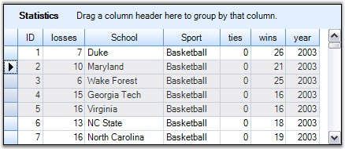
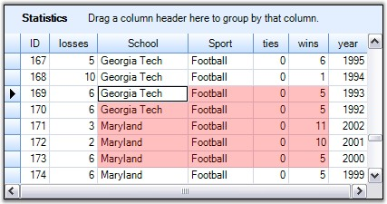

Model Based Selection is cell-based that allows you to do a selection across the cell which is not possible with record-based selection. This derives from the GridControlBase and hence will not be aware of the grouping elements like nested tables, groups, and so on.
A model-based selection can be set by initializing AllowSelection property to a value other than None. The possible values for this type of selection is defined by the enum GridSelectionFlags. By setting the various flags in AllowSelection, you can control the selection behavior of the grouping grids.
Selection Flags
|
Flag Name |
Description |
|
AlphaBlend |
Uses alpha blending to highlight selected cells. |
|
Cell |
Individual cells can be selected. |
|
Column |
Columns can be selected. |
|
Row |
Rows can be selected. |
|
Table |
Whole table can be selected. |
|
Shift |
Allows user to extend the existing selection by holding the Shift key and clicking a cell. |
|
MixRangeType |
Allows you to select multiple ranges by holding the CTRL key. |
|
Multiple |
Allows both rows and columns to be selected at the same time when GridSelectionFlags.Multiple is enabled. |
|
Keyboard |
Allows extend existing selection when user holds SHIFT+Arrow keys. |
|
Any |
Default behavior for selecting cells: Rows, Columns, Cells, Table, Multiple, Extends Shift Key support and alpha blending. |
|
None |
Disable selecting cells. |
You can combine more than one flags to customize the current selection behavior.
Example
Following code example illustrates how to set the selection mode for selecting multiple rows with alpha blending.
|
[C#]
this.gridGroupingControl1.TableOptions.AllowSelection = GridSelectionFlags.AlphaBlend | GridSelectionFlags.Row | GridSelectionFlags.Multiple; |
|
[VB.NET]
Me.gridGroupingControl1.TableOptions.AllowSelection = GridSelectionFlags.AlphaBlend Or GridSelectionFlags.Row Or GridSelectionFlags.Multiple |

Figure 354: Model Based Selection Illustrated
Format Selection
It is possible to modify the default color used for alphablend selection. This can be achieved by assigning a desired color to the AlphaBlendSelectionColor property. The example given below uses Red Color for alpha blending.
|
[C#]
this.gridGroupingControl1.TableOptions.AllowSelection = GridSelectionFlags.AlphaBlend | GridSelectionFlags.Cell; this.gridGroupingControl1.TableModel.Options.AlphaBlendSelectionColor = Color.Red; |
|
[VB.NET]
Me.gridGroupingControl1.TableOptions.AllowSelection = GridSelectionFlags.AlphaBlend Or GridSelectionFlags.Cell Me.gridGroupingControl1.TableModel.Options.AlphaBlendSelectionColor = Color.Red |

Figure 355: AlphaBlendSelectionColor = "Red"
 Note: For more details, refer the following
browser sample:
Note: For more details, refer the following
browser sample:
<Install Location>\Syncfusion\EssentialStudio\[Version Number]\Windows\Grid.Grouping.Windows\Samples\2.0\Grouping Grid Options\Table Options Demo